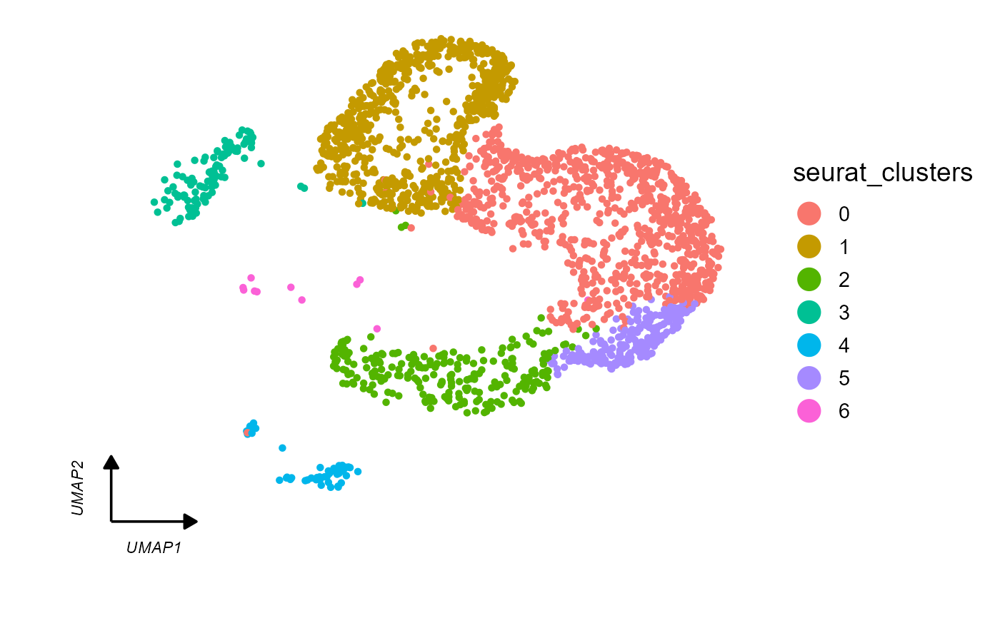
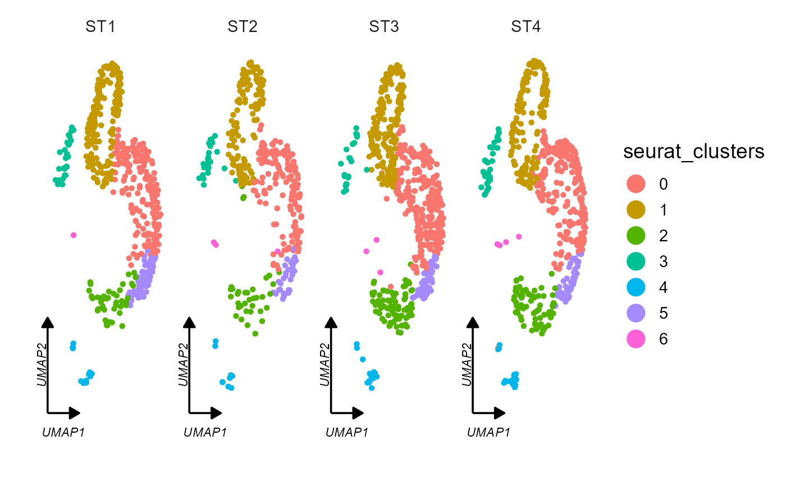
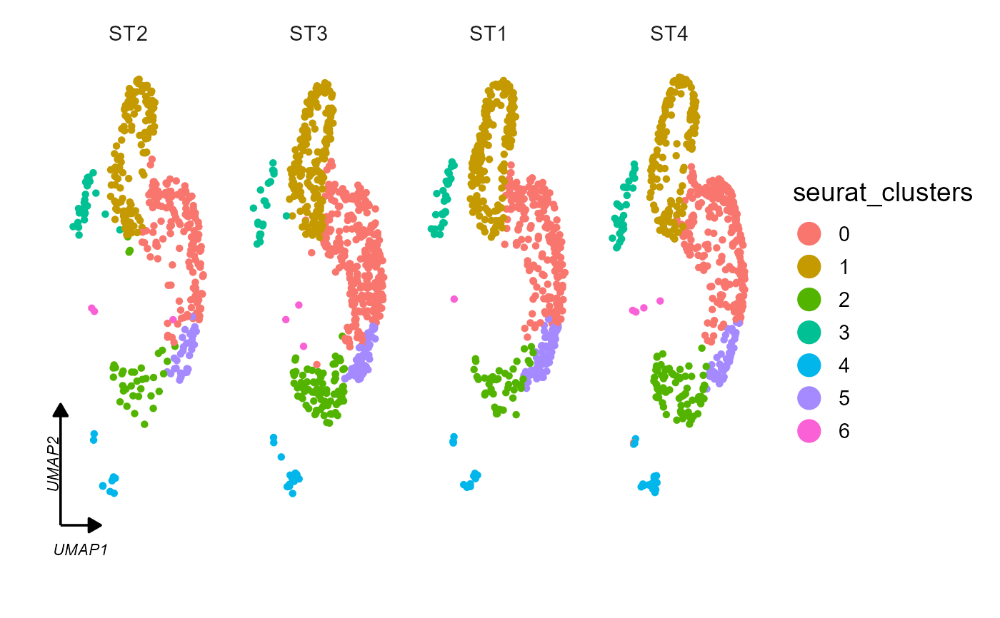
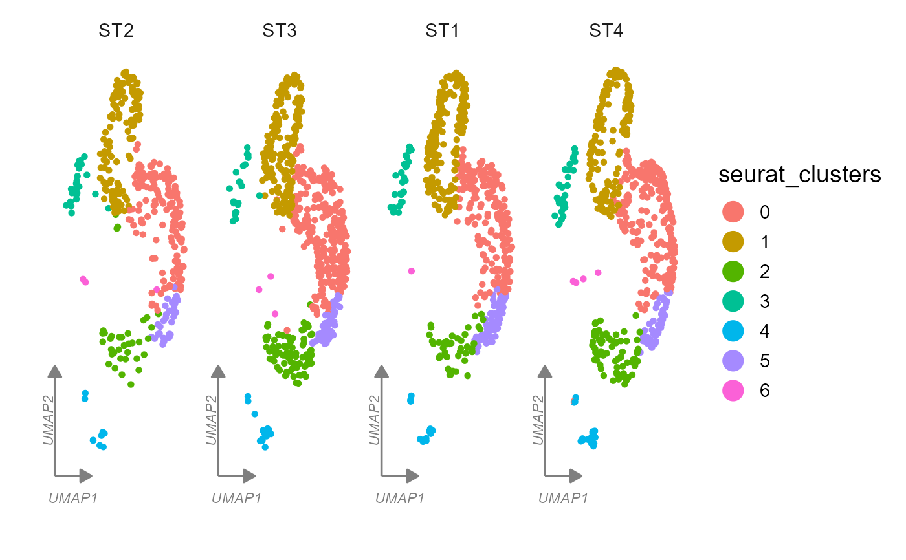
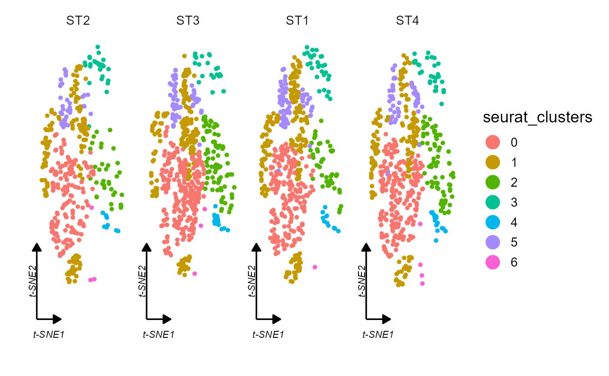

clusterCornerAxes.RdAdd corner axes on seurat UMAP/tSNE cluster figures
seurat object.
"string", reduction type (umap/tsne).
"string", give the column name in seurat metadata to facet plot.
"string", the point color to group by,cluster name, default "seurat_clusters".
"num", point size.
"num", plot width and height ratio, default NULL.
"logic", whether to split/facet the plot, default "TRUE".
"num", rows to plot when no_split = FALSE.
"num", the corner axis line relative length to plot axis(0-1).
"num" ,the relative distance of corner axis label to axis.
"string", show multiple corner axis or only one (mul/one), default "mul".
"string", legend position same as ggplot theme function, default "right".
The legned point size, default is 5.
"string", corner line and label color, default "black".
"string", facet background color, default "white".
"string", arrow type (open/closed), default "closed".
"num", the corner label text size, default is 3.
"num", theme base size, default is 14.
Another theme style, default is "default", or "bwCorner".
"logic", whether add circle on clusters, default is "FALSE".
"logic", using the legacy version to add a circle, the parameters `nbin`, `nsm`, `addsm`, `sfac` and `qval` are only applicable to legacy, default is "FALSE".
"num", circle fill color alpha, default is 0.1.
"num", the distance to extend the curve (circle), this parameter only takes effect when `add_circle_legacy = FALSE`.
"num", circle line size, default is 1.
"num", circle line color, default is "grey50".
"num", circle line type, default is "dashed".
"num", number of points used to shape the hull, default 100.
"num", number of points used to perform convolution, should less than nbin, default 10.
"num", number of additional times of convolution performed, default 1.
"num", expansion size factor, larger value means bigger hull, default 1.5.
"num", quantile of each sector, used to determine the edge of the hull, should less than 1, default 1.5.
Whether to label cell type on plot, default is FALSE.
Cell type label size, default is 6.
Cell type label color, default is "black".
Whether show legend, default is TRUE.
Which group corner axis to be added when "axes" set to "one", default is the first level.
Return a ggplot object.
test <- system.file("extdata", "seuratTest.RDS", package = "scVisual")
tmp <- readRDS(test)
# umap
clusterCornerAxes(
object = tmp, reduction = "umap",
no_split = TRUE
)
#> Warning: `aes_string()` was deprecated in ggplot2 3.0.0.
#> ℹ Please use tidy evaluation idioms with `aes()`.
#> ℹ See also `vignette("ggplot2-in-packages")` for more information.
#> ℹ The deprecated feature was likely used in the scVisual package.
#> Please report the issue to the authors.

# arrowType
clusterCornerAxes(
object = tmp, reduction = "umap",
no_split = TRUE, arrow_type = "open"
)
# facet by metadata column "orig.ident"
clusterCornerAxes(
object = tmp, reduction = "umap",
no_split = FALSE, group_facet = "orig.ident",
rel_length = 0.5
)

# retain only one axes with factor ordering
tmp$orig.ident <- factor(tmp$orig.ident, levels = c("ST2", "ST3", "ST1", "ST4"))
clusterCornerAxes(
object = tmp, reduction = "umap",
no_split = FALSE, group_facet = "orig.ident",
rel_length = 0.5,
axes = "one"
)

# line color
clusterCornerAxes(
object = tmp, reduction = "umap",
no_split = FALSE, group_facet = "orig.ident",
rel_length = 0.5,
line_text_col = "grey50"
)

# tsne
clusterCornerAxes(
object = tmp, reduction = "tsne",
no_split = FALSE, group_facet = "orig.ident",
rel_length = 0.5
)
